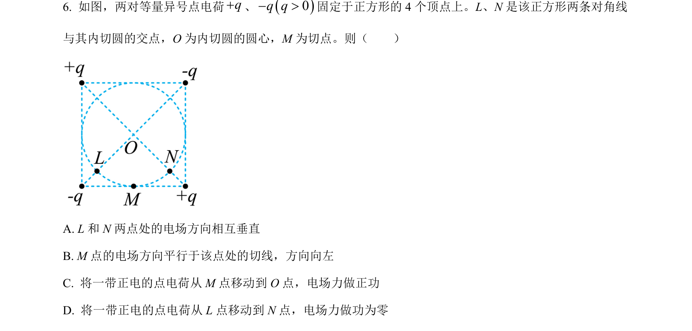
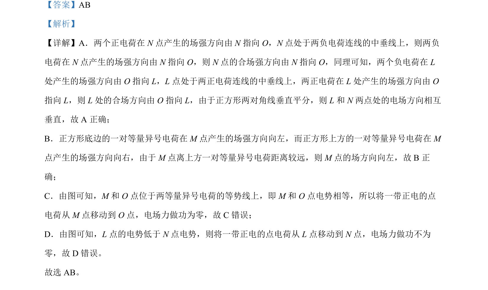

考点：电场强度叠加 等量异号电荷电场 电势 电场力做功

本题通过分析正方形顶点电荷分布，判断各点场强方向、电势高低及电场力做功情况。

📄 原 PDF 第 6 页：
素材/真题/吉林/2008-2024·（吉林）物理高考真题/2022年高考物理试卷（全国乙卷）（解析卷）.pdf
【答案】AB 【解析】 【详解】A．两个正电荷在 N点产生的场强方向由 N指向 O，N点处于两负电荷连线的中垂线上，则两负 电荷在 N点产生的场强方向由 N指向 O，则 N点的合场强方向由 N指向 O，同理可知，两个负电荷在 L 处产生的场强方向由 O 指向 L，L 点处于两正电荷连线的中垂线上，两正电荷在 L 处产生的场强方向由 O 指向 L，则 L 处的合场方向由 O 指向 L，由于正方形两对角线垂直平分，则 L 和 N两点处的电场方向相互 垂直，故 A 正确； B．正方形底边的一对等量异号电荷在 M 点产生的场强方向向左，而正方形上方的一对等量异号电荷在 M 点产生的场强方向向右，由于 M 点离上方一对等量异号电荷距离较远，则 M 点的场方向向左，故 B正 确； C．由图可知，M 和 O 点位于两等量异号电荷的等势线上，即 M 和 O 点电势相等，所以将一带正电的点 电荷从 M 点移动到 O 点，电场力做功为零，故 C错误； D．由图可知，L 点的电势低于 N点电势，则将一带正电的点电荷从 L 点移动到 N点，电场力做功不为 零，故 D 错误。 故选 AB。